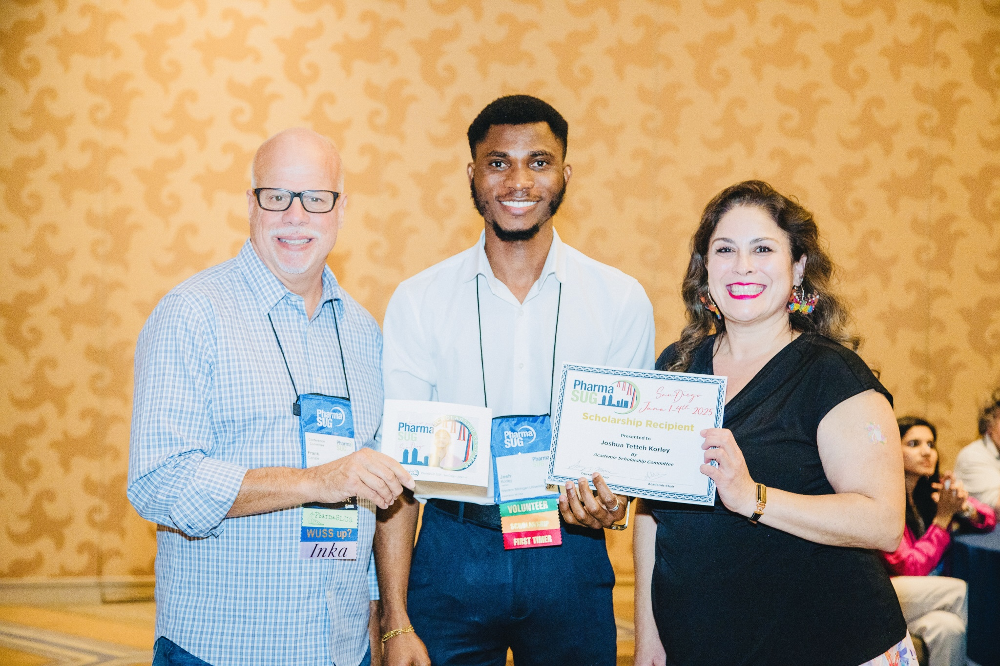

PhD in Biostatistics
University of South Carolina
Bayesian methodology, survival analysis, causal inference, clinical trial design, functional data analysis, and neuroscience.Biostatistics · Trial methodology · Digital biomarkers
I am Joshua Korley, a Biostatistics PhD student interested in developing Bayesian, survival, causal, adaptive-trial, and functional data methods for complex clinical, imaging, wearable, and longitudinal data. My applications span neuroscience, aging, drug development, and selected oncology research.
Academic foundation
University of South Carolina
Bayesian methodology, survival analysis, causal inference, clinical trial design, functional data analysis, and neuroscience.University of Connecticut
Biopharmaceutical Summer Academy with training in adaptive design, estimands, multiplicity, clinical-data standards, and trial simulation.Western Michigan University
Graduate Certificate in Biostatistics and thesis research in causal-survival modeling for prostate cancer.University of Ghana
Actuarial Science concentration.Research profile
Research on how complex evidence can be used without losing its timing, uncertainty, heterogeneity, or clinical meaning.
Across pharmaceutical and academic research, I work with interim trial evidence, recurrent and terminal events, wearable activity, circadian signals, neuroimaging, cognitive outcomes, treatment heterogeneity, and patient-level risk. The goal is methodology that is rigorous enough for statistical research and useful enough for real biomedical decisions.
Bayesian and frequentist designs for interim learning, continuation, modification, stopping, sample-size revision, subgroup assessment, estimands, multiplicity, and historical borrowing.
Functional and longitudinal methods that preserve timing, rhythm, variability, intensity, distributional shape, and spatial structure in wearable and neuroimaging data.
Bayesian survival, competing-risk, recurrent-event, informative-dropout, and longitudinal models for outcomes shaped by comorbidity, hospitalization, and terminal events.
Treatment-effect heterogeneity, propensity-score methods, inverse probability weighting, doubly robust estimation, and clinically interpretable patient-level risk.
Selected work
 01 · Statistical methodology
01 · Statistical methodologyAn estimand-driven framework for recurrent outcomes when a terminal event changes how long recurrent events can be observed.
 02 · Neuroscience
02 · NeuroscienceA competing-risk investigation of when participants receive their first MRI or PET scan, with death before imaging treated as a competing event.
 03 · Cognitive aging
03 · Cognitive agingFunctional data analysis of daily activity distributions, preserving timing, intensity, variability, and distributional shape beyond crude activity totals.
Research appointments
Industry research
Adaptive clinical-trial methodology at Bristol Myers Squibb, Cardiovascular & Neuroscience Biostatistics.
May 2026 to August 2026ASPIRE-funded research
Functional and longitudinal analysis of Fitbit-derived circadian digital phenotypes in cardiology, Alzheimer’s disease and related dementias at USC.
Starting August 2026Academic research
Bayesian, survival, functional, and longitudinal methods for wearable, cognitive-aging, and other biomedical data in the Department of Epidemiology and Biostatistics at USC.
August 2025 to presentIndustry research
Clinical-trial biomarker, APOE, ARIA, and causal analyses supporting Alzheimer’s disease drug development in the Eli Lilly Neuroscience Therapeutic Unit.
May 2024 to August 2024Fellowship
South Carolina SmartState Center for Healthcare Quality
August 2026 to May 2027University teaching
Introductory statistics, business statistics, probability, and R programming in the Department of Statistics at WMU.
August 2023 to April 2025Research and teaching
Statistical and actuarial research, applied data analysis, and instruction in statistics, actuarial mathematics, economics, and probability at the University of Ghana.
Research: October 2022 to August 2023 · Teaching: October 2022 to December 2023
Recognition
American Statistical Association
American Statistical Association
International Biometric Society, Eastern North American Region
7th National Big Data Health Science Conference
posit::conf(2026), Houston, Texas
Recent and upcoming
Selected as a Posit Opportunity Scholar to attend the conference from September 14 to 16 in Houston, Texas.
Attending JSM from August 1 to 6 and serving as an invited student panelist in the Diversity Workshop and Mentoring Program.
Presenting competing-risk neuroimaging research in London, United Kingdom.
Connect